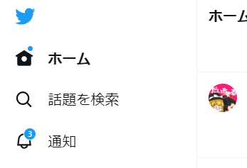

Goodbye "𝕏"
「𝕏」ってなんかね...
みなさんこう思ったと思います、
「Xってなんかやだな。」
ブラウザ拡張機能 Back Twitterではその問題を解決します。
鳥を生き返らせるぞ！！！
「は？」
と思ったかもしれませんがご安心下さい。
𝕏をTwitterにするだけです。
Bird!!!

※解像度低くてごめん☆
今見ていただいた上の画像のように、
𝕏がTwitterに変身します。
以上
Install
Step.1 - Download
このサイトの一番下の「Download」からダウンロードして下さい。
Step.2 - [.zip]Decompression
いつもお使いの方法でダウンロードしたzipを解凍して下さい。
Step.3 - Install(Chrome)
Chromeを開き、右上のパズルマークから「拡張機能を管理」、ページ右上の「デベロッパーモード」をONにし、ページ左側の「パッケージされていない拡張機能を読み込む」、を押し、先程解凍したフォルダを選択
以上でインストール完了っ！𝕏を開いてみよう！
Step.3 - Install(Firefox)
Firefoxを開き、アドレスバーに「about:debugging#/runtime/this-firefox」と入力しアクセス、ページの中にある「一時的なアドオンを読み込む」を押し、先程解凍したフォルダ内の「manifest.json」を選択
以上でインストール完了っ！𝕏を開いてみよう！
Step.3 - Install(Edge)
Edgeを開き、右上のパズルマークから「拡張機能の管理」、ページ左側の「開発者モード」をONにし、「インストール済の拡張機能」の右側にある「展開して読み込み」、を押し、先程解凍したフォルダを選択
以上でインストール完了っ！𝕏を開いてみよう！
Step.3 - Install(Vivaldi)
Vivaldiを開き、左上のロゴマークから「ツール」、「拡張機能」と進み、ページ右上の「デベロッパーモード」をONにし、ページ左側の「パッケージされていない拡張機能を読み込む」、を押し、先程解凍したフォルダを選択
以上でインストール完了っ！𝕏を開いてみよう！
Step.3 - Install(OperaGX)
OperaGXを開き、左のツールバーから「拡張機能」(箱ボタン)を押し、ページ右上の「開発者モード」をONにし、ページ左側の「パッケージされていない拡張機能を読み込む」、を押し、先程解凍したフォルダを選択
以上でインストール完了っ！𝕏を開いてみよう！
Notice
この拡張機能で起きた損害はだいちまるは一切保証しません！！！
この拡張機能は開発段階のため二次配布等は禁止とします！
いつか配布OKにするかもです！！！
Download
BackTwitter
Ver 1.0.3
2023/07/25
©2022 - 2023 Daichimaru